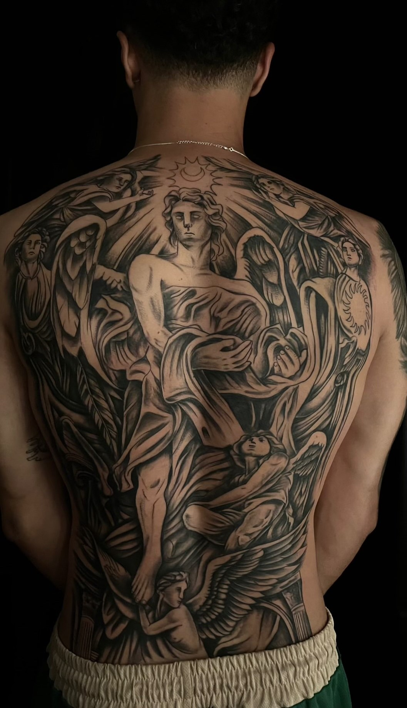
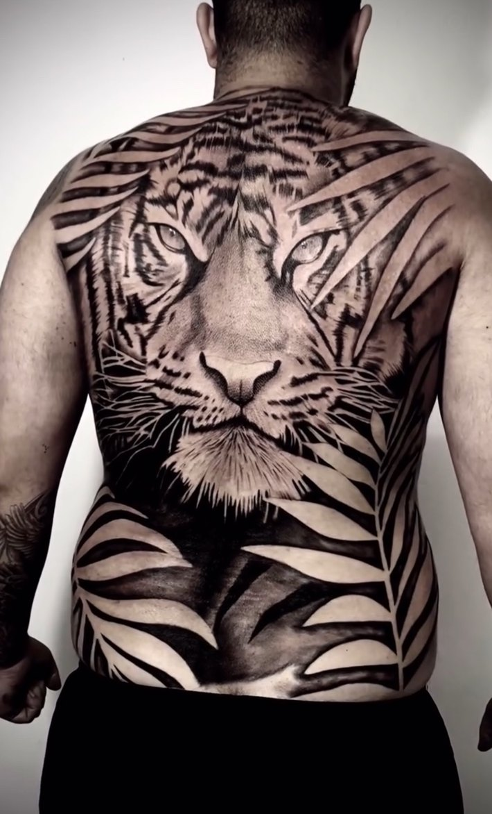
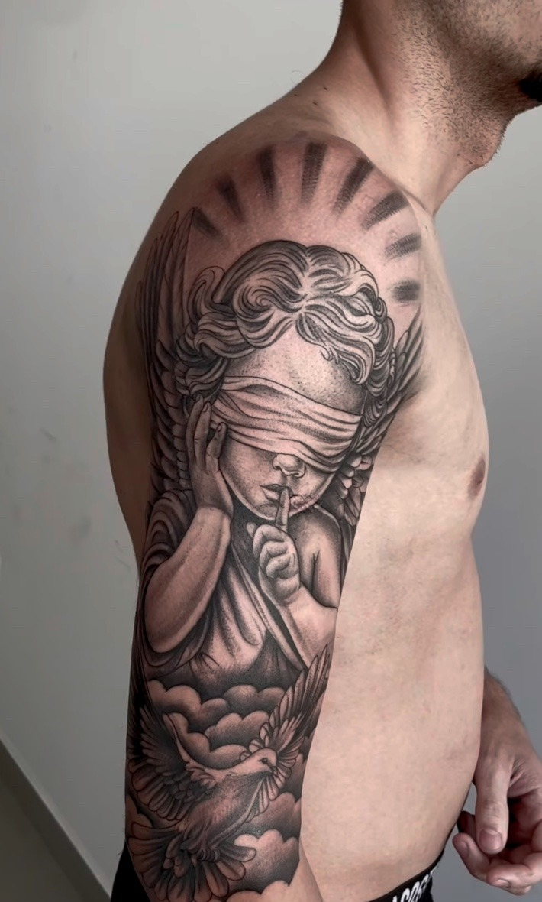
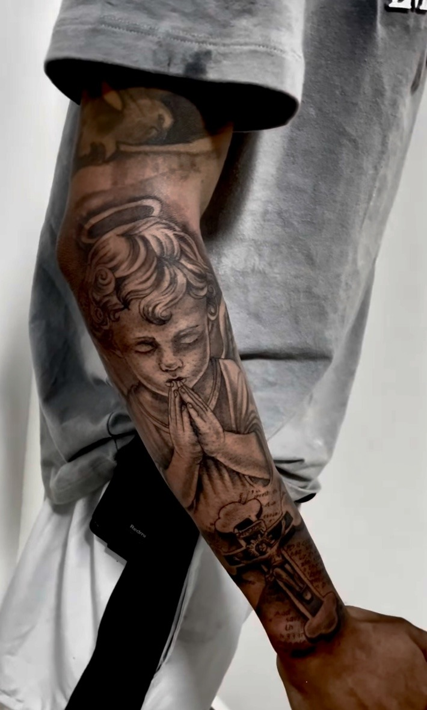
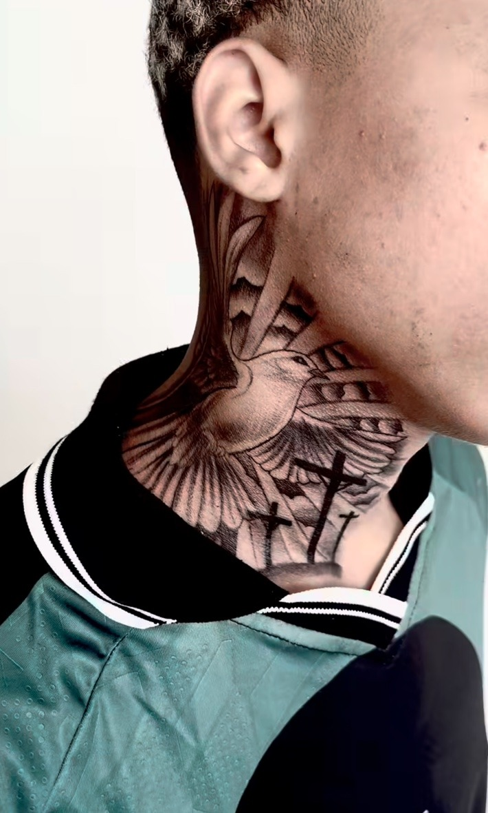
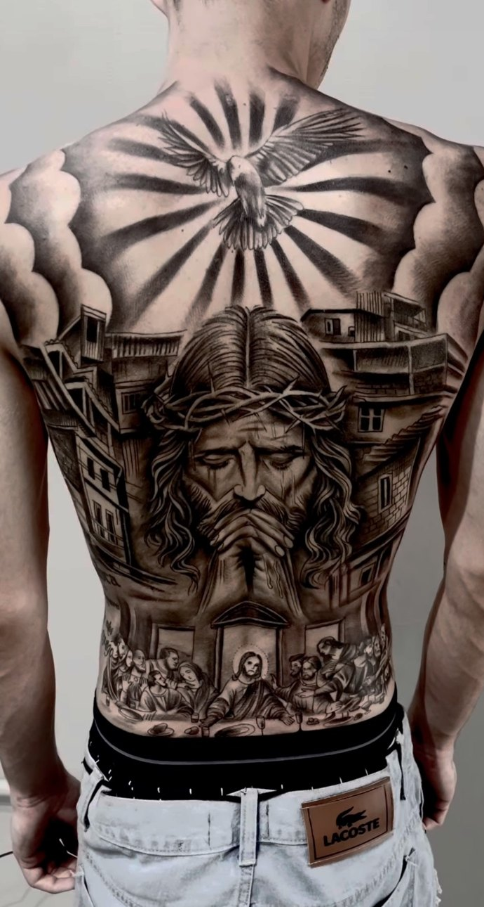
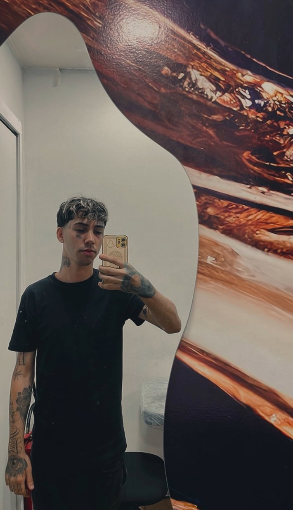
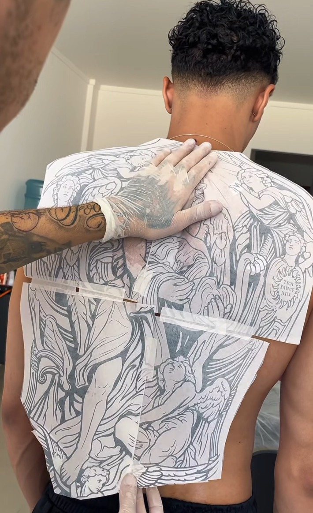
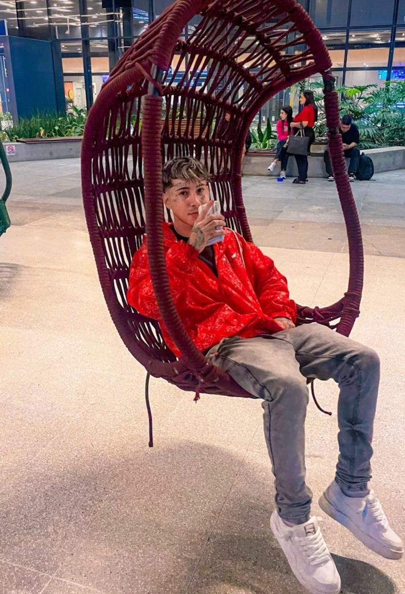

BLACK & GREY · VILA VELHA — ES
KALEBTATTOO
Preto e cinza com identidade. Projetos feitos para ter presença de perto e de longe.
Não é só sobre tatuar.
É sobre vestir uma ideia na pele.
Trabalhos
selecionados






Por trás
da agulha
O trabalho do Kaleb é construído em preto e cinza, contraste e composição. Cada projeto é pensado para conversar com o corpo — não apenas preencher espaço.
Realismo, fechamentos e peças de grande impacto visual com atenção aos detalhes que fazem a tattoo continuar forte mesmo à distância.
Ver Instagram ↗- 01Black & Greycontraste, profundidade, leitura
- 02Realismovolume, textura, presença
- 03Fechamentosbraços, costas e grandes áreas
- 04Projetos autoraiscomposição pensada para o corpo
- 05Grandes composiçõespeças que dominam o espaço

Do papel
à pele
- 01 — IdeiaReferências, intenção e direção da peça.
- 02 — CriaçãoComposição adaptada à anatomia.
- 03 — StencilPosicionamento, escala e leitura.
- 04 — SessãoExecução com foco em contraste e detalhe.
- 05 — ResultadoA peça final integrada ao corpo.

Sua ideia.
A arte dele.
Sua pele.
Mar.
Rua.
Arte.
A mesma atitude que aparece fora do estúdio também aparece no trabalho: liberdade, presença e identidade própria.

COAST / CITY / INKTem uma ideia?
Vamos tirar do papel.
Fale direto com Kaleb para orçamento e disponibilidade.